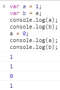
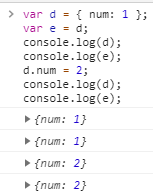
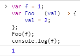
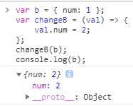

pass by Value vs pass by Reference
javascript 總是 pass by reference
例一、
var a = 1;
意思是將這個 1 的 object 的位址 assign 給 a 變數。
例二、
var a = 1; var b = a;
意思是將這個 1 的 object 的位址 assign 給 a 變數；
再將 a 所參考的位置 reassign 給 b，這時 b 的參考位置將會向這個 1 的 object 的位址。
例三、
var d = { num: 1 }; var e = d;
意思是將這個 1 的 object 的位址 assign 給 num 屬性；
{ } object 擁有 num 屬性；
而這 { } object 的位址 assign 給 d 變數；
然後再將 d 所參考的位置 reassign 給 e，這時 e 的參考位置將會向這個 { } 的 object 的位址。
有了以上觀念之後，再來看其他容易誤導例子
例四、
var a = 1; var b = a; console.log(a); console.log(b); a = 0; console.log(a); console.log(b);

b 是參考到 1 object 這位址，所以當 a 重新參考到 0 object 這位址時，
並不會影響到 b。
例五、
var d = { num: 1 }; var e = d; console.log(d); console.log(e); d.num = 2; console.log(d); console.log(e);

e 是參考到 { } object 這位址，{ } object 擁有 num 屬性，當 num 屬性重新參考到 2 object 時，
e 去取 num 屬性值時，將會參考到 2 這個 object。
再來看 function scope 例子
例六、
var f = 1; var Foo = (val) => { val = 2; }; Foo(f); console.log(f);

Foo function 參數 val 的參考位址將會指到呼叫 Foo function 所代進來的變數 f，
Foo(f) 的意思是將 f 所參考到 1 object 的位址，reassign 給參數 val，
也就是參數 val 的參考位址將會指到 1 object 的位址；
而當 Foo function 將 val 的參考位址重新指到 2 object 的位址時，
並不會影響到 f 所參考到 1 object 的位址。
例七、
var b = { num: 1 }; var changeB = (val) => { val.num = 2; }; changeB(b); console.log(b);

changeB function 參數 val 的參考位址將會指到呼叫 changeB function 所代進來的變數 b，
changeB(b) 的意思是將 b 所參考到 { } object 的位址，reassign 給參數 val，
也就是參數 val 的參考位址將會指到 { } object 的位址；
當參數 val 的 num 屬性重新指到 2 object 位址時，
變數 b 的 num 屬性也將會參考到 2 這個 object。